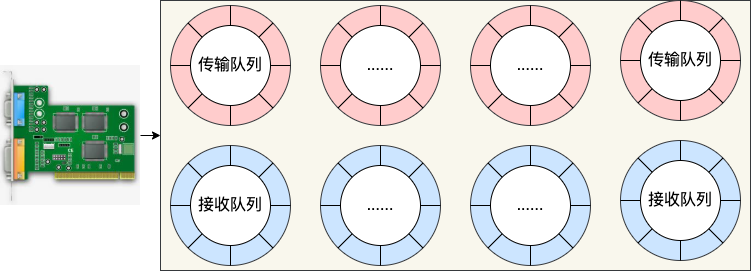
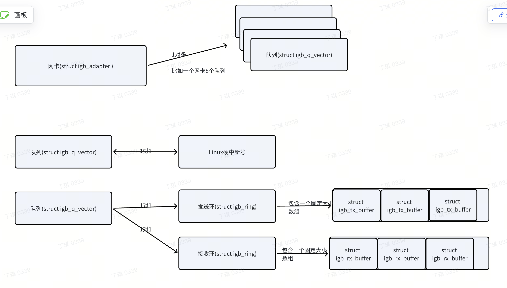
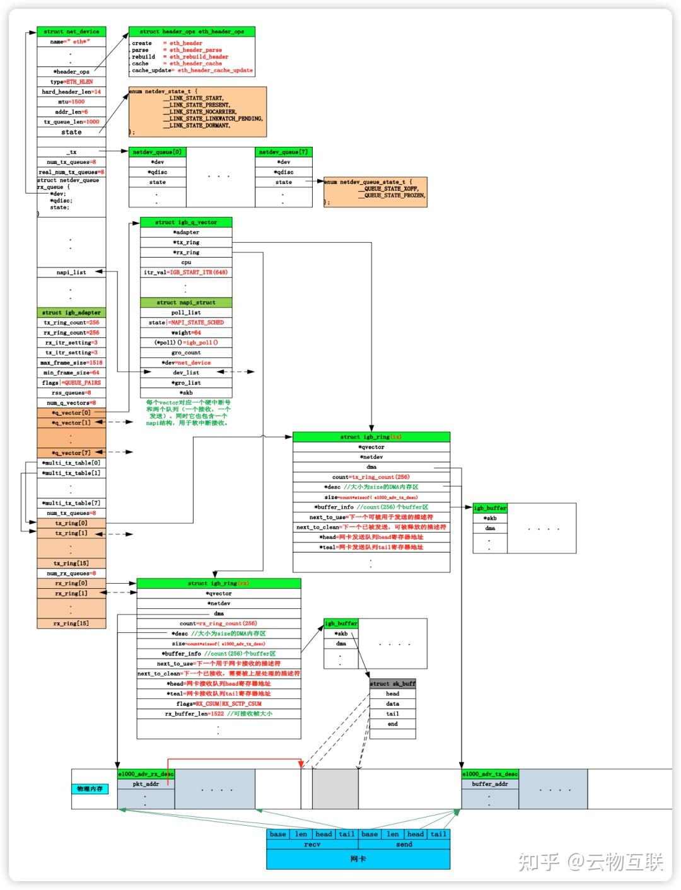
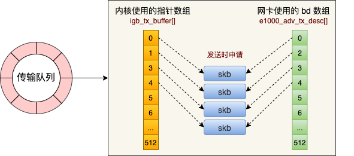

概述
核心数据结构
1 网卡 struct igb_adapter
/* board specific private data structure */
struct igb_adapter {
unsigned long active_vlans[BITS_TO_LONGS(VLAN_N_VID)];
struct net_device *netdev;
unsigned long state;
unsigned int flags;
unsigned int num_q_vectors;
struct msix_entry msix_entries[MAX_MSIX_ENTRIES];
/* Interrupt Throttle Rate */
u32 rx_itr_setting;
u32 tx_itr_setting;
u16 tx_itr;
u16 rx_itr;
/* TX */
u16 tx_work_limit;
u32 tx_timeout_count;
int num_tx_queues;
struct igb_ring *tx_ring[16];
/* RX */
int num_rx_queues;
struct igb_ring *rx_ring[16];
u32 max_frame_size;
u32 min_frame_size;
struct timer_list watchdog_timer;
struct timer_list phy_info_timer;
u16 mng_vlan_id;
u32 bd_number;
u32 wol;
u32 en_mng_pt;
u16 link_speed;
u16 link_duplex;
struct work_struct reset_task;
struct work_struct watchdog_task;
bool fc_autoneg;
u8 tx_timeout_factor;
struct timer_list blink_timer;
unsigned long led_status;
/* OS defined structs */
struct pci_dev *pdev;
spinlock_t stats64_lock;
struct rtnl_link_stats64 stats64;
/* structs defined in e1000_hw.h */
struct e1000_hw hw;
struct e1000_hw_stats stats;
struct e1000_phy_info phy_info;
struct e1000_phy_stats phy_stats;
u32 test_icr;
struct igb_ring test_tx_ring;
struct igb_ring test_rx_ring;
int msg_enable;
struct igb_q_vector *q_vector[MAX_Q_VECTORS];
u32 eims_enable_mask;
u32 eims_other;
/* to not mess up cache alignment, always add to the bottom */
u16 tx_ring_count;
u16 rx_ring_count;
unsigned int vfs_allocated_count;
struct vf_data_storage *vf_data;
int vf_rate_link_speed;
u32 rss_queues;
u32 wvbr;
u32 *shadow_vfta;
struct ptp_clock *ptp_clock;
struct ptp_clock_info ptp_caps;
struct delayed_work ptp_overflow_work;
struct work_struct ptp_tx_work;
struct sk_buff *ptp_tx_skb;
struct hwtstamp_config tstamp_config;
unsigned long ptp_tx_start;
unsigned long last_rx_ptp_check;
unsigned long last_rx_timestamp;
spinlock_t tmreg_lock;
struct cyclecounter cc;
struct timecounter tc;
u32 tx_hwtstamp_timeouts;
u32 rx_hwtstamp_cleared;
char fw_version[32];
#ifdef CONFIG_IGB_HWMON
struct hwmon_buff *igb_hwmon_buff;
bool ets;
#endif
struct i2c_algo_bit_data i2c_algo;
struct i2c_adapter i2c_adap;
struct i2c_client *i2c_client;
u32 rss_indir_tbl_init;
u8 rss_indir_tbl[IGB_RETA_SIZE];
unsigned long link_check_timeout;
int copper_tries;
struct e1000_info ei;
u16 eee_advert;
};
2 发送和接收 buffer(单个)
struct igb_tx_buffer {
union e1000_adv_tx_desc *next_to_watch;
unsigned long time_stamp;
struct sk_buff *skb;
unsigned int bytecount;
u16 gso_segs;
__be16 protocol;
DEFINE_DMA_UNMAP_ADDR(dma);
DEFINE_DMA_UNMAP_LEN(len);
u32 tx_flags;
};
struct igb_rx_buffer {
dma_addr_t dma;
struct page *page;
unsigned int page_offset;
};
3 网卡中断描述符数据结构 struct igb_q_vector
也可以是多队列网卡里的一个队列
- 发包队列中维护了 256 个发包 buffer（struct igb_tx_buffer）
-
每个 igb_q_vector 对应一个硬中断(所以
struct igb_q_vector就是一个网卡队列), 对应 2 个struct igb_ring（两个环形缓冲区）, 其中一个用于发送、一个用于接收 -
每个网卡（struct igb_adapter）有 MAX_Q_VECTORS(默认是 8) 个 struct igb_q_vector
struct igb_ring是核心，struct igb_ring_container只是一个外包装.- 每个
struct igb_ring是就是一个RingBuffer, 每个RingBuffer要么是用于发送要么是用于接收.


struct igb_q_vector {
struct igb_adapter *adapter; /* backlink */
int cpu; /* CPU for DCA */
u32 eims_value; /* EIMS mask value */
u16 itr_val;
u8 set_itr;
void __iomem *itr_register;
struct igb_ring_container rx, tx;
struct napi_struct napi;
struct rcu_head rcu; /* to avoid race with update stats on free */
char name[IFNAMSIZ + 9];
/* for dynamic allocation of rings associated with this q_vector */
struct igb_ring ring[0] ____cacheline_internodealigned_in_smp;
};
struct igb_ring_container {
struct igb_ring *ring; /* pointer to linked list of rings */
unsigned int total_bytes; /* total bytes processed this int */
unsigned int total_packets; /* total packets processed this int */
u16 work_limit; /* total work allowed per interrupt */
u8 count; /* total number of rings in vector */
u8 itr; /* current ITR setting for ring */
};
struct igb_ring {
struct igb_q_vector *q_vector; /* backlink to q_vector */
struct net_device *netdev; /* back pointer to net_device */
struct device *dev; /* device pointer for dma mapping */
union { /* array of buffer info structs */
struct igb_tx_buffer *tx_buffer_info;
struct igb_rx_buffer *rx_buffer_info;
};
void *desc; /* descriptor ring memory*/ /* 大小为size的DMA内存区*/
unsigned long flags; /* ring specific flags */
void __iomem *tail; /* pointer to ring tail register */
dma_addr_t dma; /* phys address of the ring */
unsigned int size; /* length of desc. ring in bytes */
u16 count; /* number of desc. in the ring */ /*256个*/
u8 queue_index; /* logical index of the ring*/
u8 reg_idx; /* physical index of the ring */
/* everything past this point are written often */
u16 next_to_clean;
u16 next_to_use;
u16 next_to_alloc;
union {
/* TX */
struct {
struct igb_tx_queue_stats tx_stats;
struct u64_stats_sync tx_syncp;
struct u64_stats_sync tx_syncp2;
};
/* RX */
struct {
struct sk_buff *skb;
struct igb_rx_queue_stats rx_stats;
struct u64_stats_sync rx_syncp;
};
};
} ____cacheline_internodealigned_in_smp;

4 DMA 描述符
- DMA 描述符（union e1000_adv_tx_desc）

- 上图中,每个 RingBuffer 内部(每个
struct igb_ring内部)有一个igb_t(r)x_buffer 数组和一个e1000_adv_tx_desc 数组, 其中e1000_adv_tx_desc 数组中任意一个元素就是一个 DMA 描述符
5 对上层提供 net_device_ops
drivers/net/ethernet/intel/igb/igb_main.c:2080:static const struct net_device_ops igb_netdev_ops = {
核心函数
1 硬中断注册
igb_request_msixdrivers/net/ethernet/intel/igb/igb_main.c
/**
* igb_request_msix - Initialize MSI-X interrupts
* @adapter: board private structure to initialize
*
* igb_request_msix allocates MSI-X vectors and requests interrupts from the
* kernel.
**/
static int igb_request_msix(struct igb_adapter *adapter)
{
struct net_device *netdev = adapter->netdev;
struct e1000_hw *hw = &adapter->hw;
int i, err = 0, vector = 0, free_vector = 0;
err = request_irq(adapter->msix_entries[vector].vector,
igb_msix_other, 0, netdev->name, adapter);
if (err)
goto err_out;
for (i = 0; i < adapter->num_q_vectors; i++) {
struct igb_q_vector *q_vector = adapter->q_vector[i];
vector++;
q_vector->itr_register = hw->hw_addr + E1000_EITR(vector);
if (q_vector->rx.ring && q_vector->tx.ring)
sprintf(q_vector->name, "%s-TxRx-%u", netdev->name,
q_vector->rx.ring->queue_index);
else if (q_vector->tx.ring)
sprintf(q_vector->name, "%s-tx-%u", netdev->name,
q_vector->tx.ring->queue_index);
else if (q_vector->rx.ring)
sprintf(q_vector->name, "%s-rx-%u", netdev->name,
q_vector->rx.ring->queue_index);
else
sprintf(q_vector->name, "%s-unused", netdev->name);
err = request_irq(adapter->msix_entries[vector].vector,
igb_msix_ring, 0, q_vector->name,
q_vector);
if (err)
goto err_free;
}
igb_configure_msix(adapter);
return 0;
err_free:
/* free already assigned IRQs */
free_irq(adapter->msix_entries[free_vector++].vector, adapter);
vector--;
for (i = 0; i < vector; i++) {
free_irq(adapter->msix_entries[free_vector++].vector,
adapter->q_vector[i]);
}
err_out:
return err;
}
2 硬中断处理函数
-
根据
err = request_irq(adapter->msix_entries[vector].vector,igb_msix_ring, 0, q_vector->name,得知, 硬中断处理函数为 igb_msix_ring函数 -
具体
static irqreturn_t igb_msix_ring(int irq, void *data)
{
struct igb_q_vector *q_vector = data;
/* Write the ITR value calculated from the previous interrupt. */
igb_write_itr(q_vector);
napi_schedule(&q_vector->napi); // 这里传入了相应队列实例里的napi成员, 最终其实就是执行了链表添加操作: `list_add_tail(&napi->poll_list, &sd->poll_list);`, 把napi实例里的poll_list元素加入到当前CPU的softnet_data实例里的poll_list中.
// 而每个q_vector内部的napi的poll_list在初始化的时候初始化为igb_poll, 具体路径为igb_open--> __igb_open--> igb_request_irq--->igb_init_interrupt_scheme-->igb_alloc_q_vectors-->for循环调用igb_alloc_q_vector-->netif_napi_add(adapter->netdev, &q_vector->napi,igb_poll, 64);
// 到这里q_vector->napi->poll 指向了驱动程序igb_poll
return IRQ_HANDLED;
}
void netif_napi_add(struct net_device *dev, struct napi_struct *napi,
int (*poll)(struct napi_struct *, int), int weight)
{
INIT_LIST_HEAD(&napi->poll_list);
hrtimer_init(&napi->timer, CLOCK_MONOTONIC, HRTIMER_MODE_REL_PINNED);
napi->timer.function = napi_watchdog;
napi->gro_count = 0;
napi->gro_list = NULL;
napi->skb = NULL;
napi->poll = poll;
if (weight > NAPI_POLL_WEIGHT)
pr_err_once("netif_napi_add() called with weight %d on device %s\n",
weight, dev->name);
napi->weight = weight;
list_add(&napi->dev_list, &dev->napi_list);
napi->dev = dev;
#ifdef CONFIG_NETPOLL
napi->poll_owner = -1;
#endif
set_bit(NAPI_STATE_SCHED, &napi->state);
napi_hash_add(napi);
}
3 igb_poll
- igb_poll函数其实在
net_rx_action和net_tx_action函数中都会被调用
/**
* igb_poll - NAPI Rx polling callback
* @napi: napi polling structure
* @budget: count of how many packets we should handle
**/
static int igb_poll(struct napi_struct *napi, int budget)
{
struct igb_q_vector *q_vector = container_of(napi,
struct igb_q_vector,
napi);
bool clean_complete = true;
#ifdef CONFIG_IGB_DCA
if (q_vector->adapter->flags & IGB_FLAG_DCA_ENABLED)
igb_update_dca(q_vector);
#endif
if (q_vector->tx.ring)
clean_complete = igb_clean_tx_irq(q_vector);
if (q_vector->rx.ring)
clean_complete &= igb_clean_rx_irq(q_vector, budget);
/* If all work not completed, return budget and keep polling */
if (!clean_complete)
return budget;
/* If not enough Rx work done, exit the polling mode */
napi_complete(napi);
igb_ring_irq_enable(q_vector);
return 0;
}
4 具体驱动函数
- 发送
static void igb_tx_map(struct igb_ring *tx_ring,
struct igb_tx_buffer *first,
const u8 hdr_len)
{
struct sk_buff *skb = first->skb;
struct igb_tx_buffer *tx_buffer;
union e1000_adv_tx_desc *tx_desc;
struct skb_frag_struct *frag;
dma_addr_t dma;
unsigned int data_len, size;
u32 tx_flags = first->tx_flags;
u32 cmd_type = igb_tx_cmd_type(skb, tx_flags);
u16 i = tx_ring->next_to_use;
tx_desc = IGB_TX_DESC(tx_ring, i);
igb_tx_olinfo_status(tx_ring, tx_desc, tx_flags, skb->len - hdr_len);
size = skb_headlen(skb);
data_len = skb->data_len;
dma = dma_map_single(tx_ring->dev, skb->data, size, DMA_TO_DEVICE);
tx_buffer = first;
for (frag = &skb_shinfo(skb)->frags[0];; frag++) {
if (dma_mapping_error(tx_ring->dev, dma))
goto dma_error;
/* record length, and DMA address */
dma_unmap_len_set(tx_buffer, len, size);
dma_unmap_addr_set(tx_buffer, dma, dma);
tx_desc->read.buffer_addr = cpu_to_le64(dma);
while (unlikely(size > IGB_MAX_DATA_PER_TXD)) {
tx_desc->read.cmd_type_len =
cpu_to_le32(cmd_type ^ IGB_MAX_DATA_PER_TXD);
i++;
tx_desc++;
if (i == tx_ring->count) {
tx_desc = IGB_TX_DESC(tx_ring, 0);
i = 0;
}
tx_desc->read.olinfo_status = 0;
dma += IGB_MAX_DATA_PER_TXD;
size -= IGB_MAX_DATA_PER_TXD;
tx_desc->read.buffer_addr = cpu_to_le64(dma);
}
if (likely(!data_len))
break;
tx_desc->read.cmd_type_len = cpu_to_le32(cmd_type ^ size);
i++;
tx_desc++;
if (i == tx_ring->count) {
tx_desc = IGB_TX_DESC(tx_ring, 0);
i = 0;
}
tx_desc->read.olinfo_status = 0;
size = skb_frag_size(frag);
data_len -= size;
dma = skb_frag_dma_map(tx_ring->dev, frag, 0,
size, DMA_TO_DEVICE);
tx_buffer = &tx_ring->tx_buffer_info[i];
}
/* write last descriptor with RS and EOP bits */
cmd_type |= size | IGB_TXD_DCMD;
tx_desc->read.cmd_type_len = cpu_to_le32(cmd_type);
netdev_tx_sent_queue(txring_txq(tx_ring), first->bytecount);
/* set the timestamp */
first->time_stamp = jiffies;
/* Force memory writes to complete before letting h/w know there
* are new descriptors to fetch. (Only applicable for weak-ordered
* memory model archs, such as IA-64).
*
* We also need this memory barrier to make certain all of the
* status bits have been updated before next_to_watch is written.
*/
wmb();
/* set next_to_watch value indicating a packet is present */
first->next_to_watch = tx_desc;
i++;
if (i == tx_ring->count)
i = 0;
tx_ring->next_to_use = i;
writel(i, tx_ring->tail);
/* we need this if more than one processor can write to our tail
* at a time, it synchronizes IO on IA64/Altix systems
*/
mmiowb();
return;
dma_error:
dev_err(tx_ring->dev, "TX DMA map failed\n");
/* clear dma mappings for failed tx_buffer_info map */
for (;;) {
tx_buffer = &tx_ring->tx_buffer_info[i];
igb_unmap_and_free_tx_resource(tx_ring, tx_buffer);
if (tx_buffer == first)
break;
if (i == 0)
i = tx_ring->count;
i--;
}
tx_ring->next_to_use = i;
}
-
- 可以看到里面最终也还是写了寄存器:
wmb()
- 可以看到里面最终也还是写了寄存器: